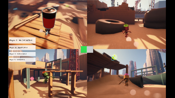
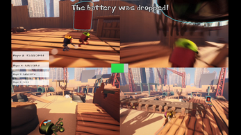
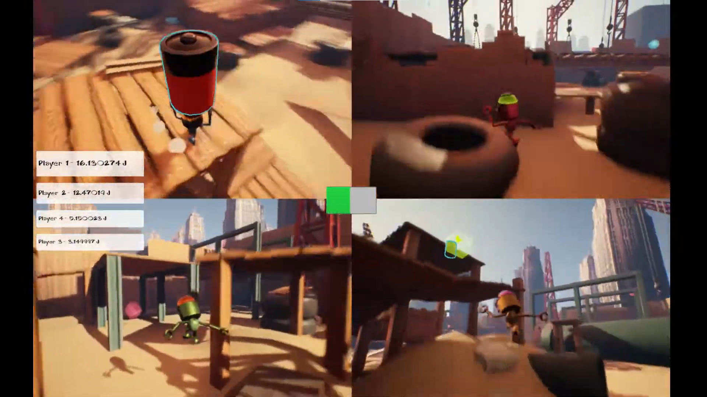
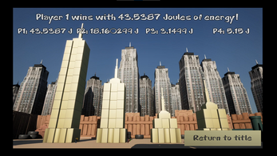
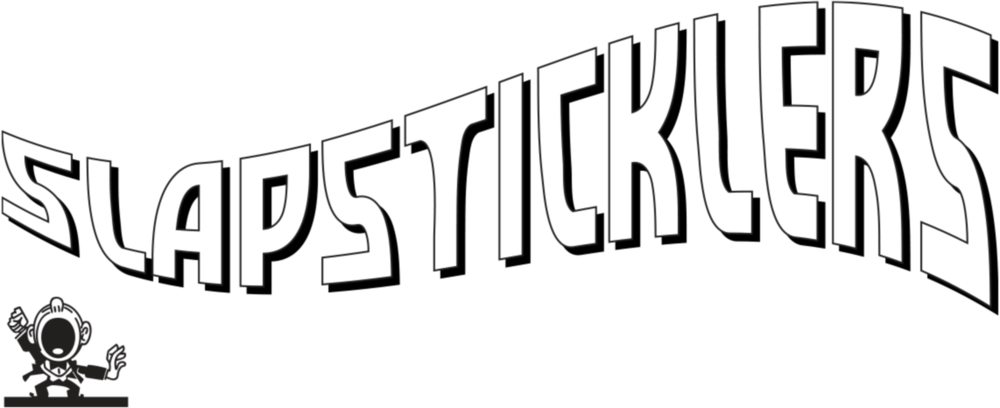
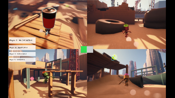
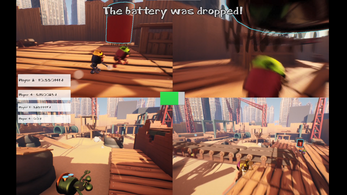
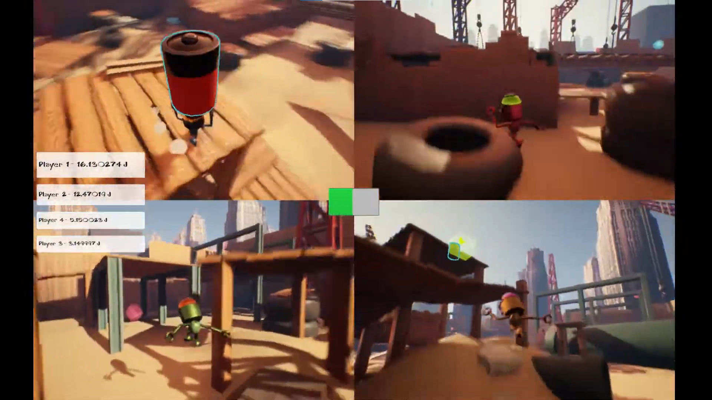
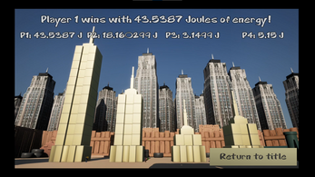
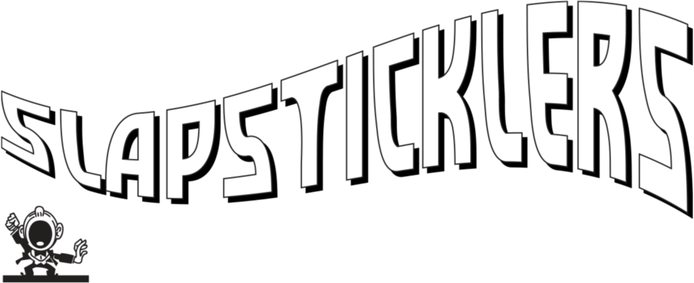
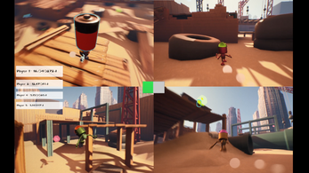
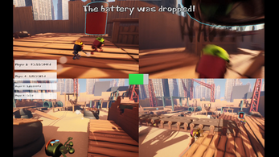
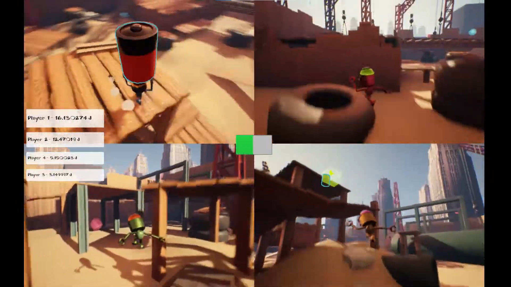
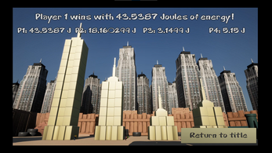
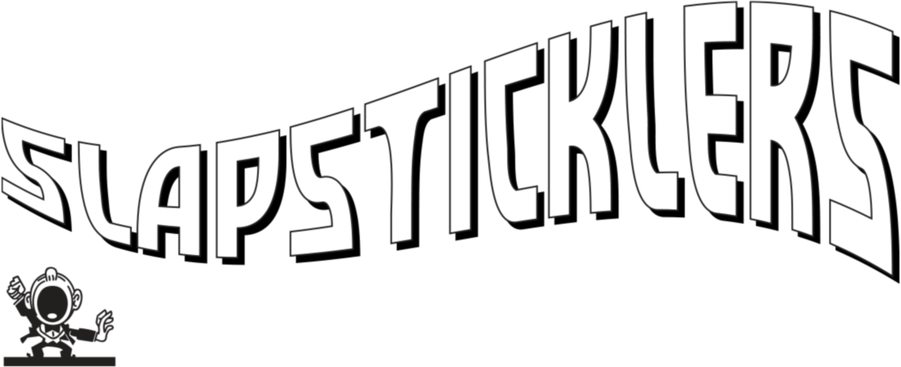
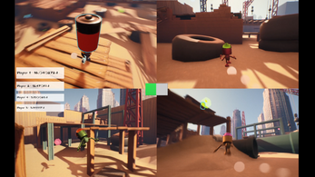
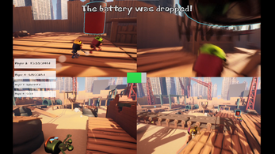
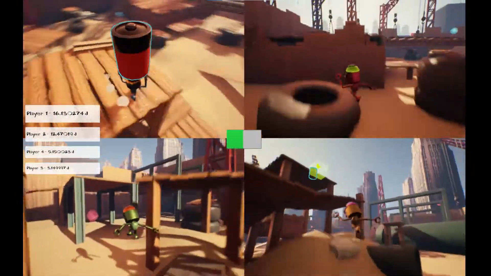
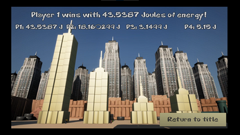
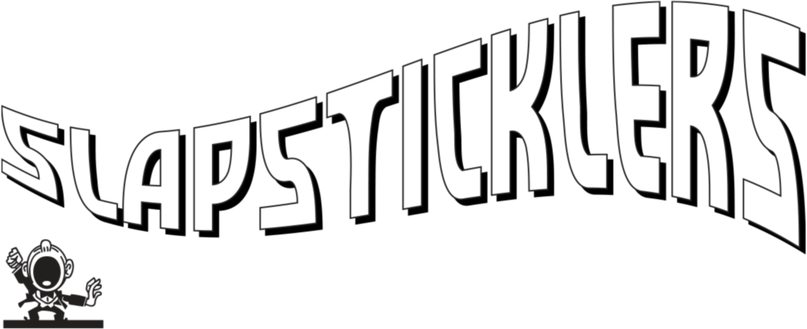
Slapsticklers was created over 7 weeks from conception to completion as part of the WPI IMGD program's Technical Game Design II class.
Slapsticklers is a competitive, multiplayer platforming game that allows up to four players to battle to hold on to a battery the longest! The longer you hold on to the battery, the more charge you'll store and the bigger a building you'll build! Who will be the best construction robot?
Developed: 2022
Development time: ~7 weeks
Languages: C++
Tools: Unreal Engine 4, GitHub, Google Workspace, Trello (for Agile), Adobe Photoshop
On top of being a programmer and designer, I ended up sliding into a management role to keep the project on track — one of my proudest moments of that was having the entire team on board with a vision we could passionately brainstorm about. Deciding early on the chaotic, goofy slapstick construction site that was the game's central metaphor allowed our team to make every part of the game feel cohesively tied to that idea.
For a project on such a short time frame, and with so few team members, doing a lot with a little was a must. In our mechanical design, we searched for a few unique mechanics that would overlap to create depth in player decision-making. In our map design, we opted for a setting that allowed for reuse and arbitrary placement of assets. What resulted was quite robust!
At the beginning of this project, we recognized that some things might be harder than we anticipated. Instead of backing ourselves into a corner with too many requirements for a minimum viable product, we focused first on a simple set of mechanics that could be provided additional depth if we had time. This also allowed our team to go back and add the juice and polish that makes a game truly satisfying (oh, and we toned down the motion blur after that recording!)
Download the game on itch.io